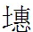

司棋一事，在七十一回叙明，暗用山石伏綫，七十三回用綉春囊在山石一逗便住，至此回可直叙去，又用無數曲折漸漸逼來，及至司棋，忽然頓住，結到入畫。文氣如黃河出崑崙，橫流數萬里，九曲至龍門，又有孟門、呂梁峽束，不得入海。是何等奇險怪特文字，令我拜服！
司棋一事，在七十一回叙明，暗用山石伏綫，七十三回用綉春囊在山石一逗便住，至此回可直叙去，又用無數曲折漸漸逼來，及至司棋，忽然頓住，結到入畫。文氣如黃河出崑崙，橫流數萬里，九曲至龍門，又有孟門、呂梁峽束，不得入海。是何等奇險怪特文字，令我拜服！
話說平兒聽迎春說了正自好笑，忽見寶玉也來了。原來管厨房柳家媳婦之妹，也因放頭開賭得了不是。這園中有素與柳家不睦的，
 前文已卯之伏綫。便又告出柳家來，說他和他妹子是伙計，雖然他妹子出名，其實賺了錢兩個人平分。因此鳳姐要治柳家之罪。那柳家的因得此信，便慌了手脚，因思素與怡紅院人最為深厚，故走來悄悄地央求晴雯、金星玻璃等人。金星玻璃告訴了寶玉。寶玉因思內中迎春之乳母也現有此罪，不若來約同迎春討情，比自己獨去單為柳家說情又更妥當，故此前來。忽見許多人在此，見他來時，都問：「你的病可好了？跑來作什麽？」寶玉不便說出討情一事，只說：「來看二姐姐。」當下衆人也不在意，且說些閒話。平兒便出去辦累絲金鳳一事。那王住兒媳婦緊跟在後，口內百般央求，只說：「姑娘好歹口內超生，我橫竪去贖了來。」平兒笑道：「你遲也贖，早也贖，既有今日，何必當初。你的意思得過去就過去了。既是這樣，我也不好意思告人，趁早去贖了來交與我送去，我一字不提。」王住兒媳婦聽說，方放下心來，就拜謝，又說：「姑娘自去貴幹，我趕晚拿了來，先回了姑娘，再送去，如何？」平兒道：「趕晚不來，可別怨我。」說畢，二人方分路各自散了。
前文已卯之伏綫。便又告出柳家來，說他和他妹子是伙計，雖然他妹子出名，其實賺了錢兩個人平分。因此鳳姐要治柳家之罪。那柳家的因得此信，便慌了手脚，因思素與怡紅院人最為深厚，故走來悄悄地央求晴雯、金星玻璃等人。金星玻璃告訴了寶玉。寶玉因思內中迎春之乳母也現有此罪，不若來約同迎春討情，比自己獨去單為柳家說情又更妥當，故此前來。忽見許多人在此，見他來時，都問：「你的病可好了？跑來作什麽？」寶玉不便說出討情一事，只說：「來看二姐姐。」當下衆人也不在意，且說些閒話。平兒便出去辦累絲金鳳一事。那王住兒媳婦緊跟在後，口內百般央求，只說：「姑娘好歹口內超生，我橫竪去贖了來。」平兒笑道：「你遲也贖，早也贖，既有今日，何必當初。你的意思得過去就過去了。既是這樣，我也不好意思告人，趁早去贖了來交與我送去，我一字不提。」王住兒媳婦聽說，方放下心來，就拜謝，又說：「姑娘自去貴幹，我趕晚拿了來，先回了姑娘，再送去，如何？」平兒道：「趕晚不來，可別怨我。」說畢，二人方分路各自散了。
平兒到房，鳳姐問他：「三姑娘叫你作什麽？」平兒笑道：「三姑娘怕奶奶生氣，叫我勸著奶奶些，問奶奶這兩天可吃些什麽。」鳳姐笑道：「倒是他還記挂著我。剛纔又出來了一件事：有人來告柳二媳婦和他妹子通同開局，凡妹子所為，都是他作主。我想，你素日肯勸我『多一事不如省一事』，就可閒一時心，自己保養保養也是好的。我因聽不進去，果然應了些，先把太太得罪了，而且自己反賺了一場病。如今我也看破了，隨他們鬧去罷，橫竪還有許多人呢。我白操一會子心，倒惹的萬人咒駡。我且養病要緊，便是好了，我也作個好好先生，得樂且樂，得笑且笑，一概是非都憑他們去罷。歷來世人到此作此想，但悔不及矣。可傷可嘆。所以我只答應著知道了，白不在我心上。」平兒笑道：「奶奶果然如此，便是我們的造化。」
一語未了，只見賈璉進來，拍手嘆氣道：「好好的又生事。前兒我和鴛鴦借當，那邊太太怎麽知道了。纔剛太太叫過我去，叫我不管那裡先遷挪二百銀子，做八月十五日節間使用。我回沒處遷挪。太太就說：『你沒有錢就有地方遷挪，我白和你商量，你就搪塞我，你就說沒地方。前兒一千銀子的當是那裡的？連老太太的東西你都有神通弄出來，這會子二百銀子，你就這樣。幸虧我沒和別人說去。』我想太太分明不短，何苦來要尋事奈何人。」鳳姐兒道：「那日並沒一個外人，誰走了這個消息？」平兒聽了，也細想那日有誰在此，想了半日，笑道：「是了。那日說話時沒一個外人，但晚上送東西來的時節，老太太那邊傻大姐的娘也可巧來送漿洗衣服。他在下房裡坐了一會子，見一大箱子東西，自然要問，必是小丫頭們不知道，說了出來，也未可知。」奇奇怪怪，從何處轉至素日(成)[來]，真如常山之蛇。因此便喚了幾個小丫頭來問，那日誰告訴呆大姐的娘。衆小丫頭慌了，都跪下賭咒發誓，說：「自來也不敢多說一句話。有人凡問什麽，都答應不知道。這事如何敢多說。」鳳姐詳情說：「他們必不敢，倒別委屈了他們。如今且把這事靠後，且把太太打發了去要緊。寧可咱們短些，又別討沒意思。」因叫平兒：「把我的金項圈拿來，且去暫押二百銀子來送去完事。」賈璉道：「越性多押二百，咱們也要使呢。」鳳姐道：「很不必，我沒處使錢。這一去還不知指那一項贖呢。」平兒拿去，吩咐一個人喚了旺兒媳婦來領去，不一時拿了銀子來。賈璉親自送去，不在話下。
這裡鳳姐和平兒猜疑，終是誰人走的風聲，竟擬不出人來。鳳姐兒又道：「知道這事還是小事，怕的是小人趁便又造非言，生出別的事來。當緊那邊正和鴛鴦結下仇了，如今聽得他私自借給璉二爺東西，那起小人眼饞肚飽，連沒縫兒的鶏蛋還要下蛆呢，如今有了這個因由，恐怕又造出些沒天理的話來也定不得。在你璉二爺還無妨，只是鴛鴦正經女兒，帶累了他受屈，豈不是咱們的過失。」平兒笑道：「這也無妨。鴛鴦借東西看的是奶奶，並不為的是二爺。一則鴛鴦雖應名是他私情，其實他是回過老太太的。老太太因怕孫男弟女多，這個也借，那個也要，到跟前撒個嬌兒，和誰要去，因此只裝不知道。奇文神文！豈世人(余相)[意想]得出者？前文云「一箱子」，若是私拿出，賈母其睡夢中之人矣。蓋此等事作者曾經，批者曾經，實係一寫往事，非特造出，故弄新筆，究竟不記不神也。◇鴛鴦借物一回於此便結了。縱鬧了出來，究竟那也無礙。」鳳姐兒道：「理固如此。只是你我是知道的，那不知道的，焉得不生疑呢。」
一語未了，人報：「太太來了。」鳳姐聽了詫異，不知為何事親來，與平兒等忙迎出來。只見王夫人氣色更變，奇。只帶一個貼己的小丫頭走來，一語不發，走至裡間坐下。鳳姐忙奉茶，因陪笑問道：「太太今日高興，到這裡逛逛。」王夫人喝命：「平兒出去！」平兒見了這般，著慌不知怎麽樣了，忙應了一聲，帶著衆小丫頭一齊出去，在房門外站住，越性將房門掩了，自己坐在臺磯上，所有的人，一個不許進去。鳳姐也著了慌，不知有何等事。只見王夫人含著泪，從袖內擲出一個香袋子來，說：「你瞧。」鳳姐忙拾起一看，見是十錦春意香袋，也嚇了一跳，忙問：「太太從那裡得來？」王夫人見問，越發泪如雨下，顫聲說道：「我從那裡得來！我天天坐在井裡，拿你當個細心人，所以我纔偷個空兒。誰知你也和我一樣。這樣的東西大天白日明擺在園裡山石上，被老太太的丫頭拾著，不虧你婆婆遇見，早已送到老太太跟前去了。我且問你，這個東西如何遺在那裡來？」奇問。鳳姐聽得，也更了顔色，忙問：「太太怎知是我的？」問的是。王夫人又哭又嘆說道：「你反問我！你想，一家子除了你們小夫小妻，餘者老婆子們，要這個何用？再女孩子們是從那裡得來？自然是那璉兒不長進下流種子那裡弄來。你們又和氣。當作一件頑意兒，年輕人兒女閨房私意是有的，你還和我賴！幸而園內上下人還不解事，尚未揀得。倘或丫頭們揀著，你姊妹看見，這還了得。不然有那小丫頭們揀著，出去說是園內揀著的，外人知道，這性命臉面要也不要？」
鳳姐聽說，又急又愧，登時紫漲了面皮，便依炕沿雙膝跪下，也含泪訴道：「太太說的固然有理，我也不敢辯我並無這樣的東西。但其中還要求太太細詳其理：那香袋是外頭僱工仿著內工綉的，帶這穗子一概是市賣貨。我便年輕不尊重些，也不要這勞什子，自然都是好的，此其一。二者這東西也不是常帶著的，我縱有，也只好在家裡，焉肯帶在身上各處去？况且又在園裡去，個個姊妹我們都肯拉拉扯扯，倘或露出來，不但在姊妹前，就是奴才看見，我有什麽意思？我雖年輕不尊重，亦不能糊塗至此。三則論主子內我是年輕媳婦，算起奴才來，比我更年輕的又不止一個人了。况且他們也常進園，晚間各人家去，焉知不是他們身上的？四則除我常在園裡之外，還有那邊太太常帶過幾個小姨娘來，如嫣紅翠雲等人，皆係年輕侍妾，他們更該有這個了。還有那邊珍大嫂子，他不算甚老外，他也常帶過配鳳等人來，焉知又不是他們的？五則園內丫頭太多，保的住個個都是正經的不成？也有年紀大些的知道了人事，或者一時半刻人查問不到偷著出去，或借著因由同二門上小么兒們打牙犯嘴，外頭得了來的，也未可知。如今不但我沒此事，就連平兒我也可以下保的。太太請細想。」
王夫人聽了這一席話大近情理，因嘆道：「你起來。我也知道你是大家小姐出身，焉得輕薄至此，不過我氣急了，拿了話激你。但如今却怎麽處？你婆婆纔打發人封了這個給我瞧，說是前日從傻大姐手裡得的，把我氣了個死。」鳳姐道：「太太快別生氣。若被衆人覺察了，保不定老太太不知道。且平心靜氣暗暗訪察，纔得確實，縱然訪不著，外人也不能知道。這叫作『胳膊折在袖內』。如今惟有趁著賭錢的因由革了許多的人這空兒，把周瑞媳婦旺兒媳婦等四五個貼近不能走話的人安插在園裡，以查賭為由。再如今他們的丫頭也太多了，保不住人大心大，生事作耗，等鬧出事來，反悔之不及。如今若無故裁革，不但姑娘們委屈煩惱，就連太太和我也過不去。不如趁此機會，以後凡年紀大些的，或有些咬牙難纏的，拿個錯兒攆出去配了人。一則保得住沒有別的事，二則也可省些用度。太太想我這話如何？」王夫人嘆道：「你說的何嘗不是，但從公細想，你這幾個姊妹也甚可憐了。猶云「可憐」，妙文！在別人視之，今古無比矣；若在榮府論，實不能比先矣。也不用遠比，只說如今你林妹妹的母親，未出閣時，是何等的嬌生慣養，是何等的金尊玉貴，那纔像個千金小姐的體統。如今這幾個姊妹，不過比人家的丫頭略强些罷了。所謂「觀於海者難為水」，俗子謂王夫人不知足，是不可矣；又謂作太過，真蟪蛄、學鳩之見也。〔一〕通共每人只有兩三個丫頭像個人樣，餘者縱有四五個小丫頭子，竟是廟裡的小鬼。如今還要裁革了去，不但於我心不忍，只怕老太太未必就依。雖然艱難，難不至此。我雖沒受過大榮華富貴，比你們是强的。如今我寧可省些，別委曲了他們。以後要省儉先從我來倒使得。如今且叫人傳了周瑞家的等人進來，就吩咐他們快快暗地訪拿這事要緊。」鳳姐聽了，即喚平兒進來吩咐出去。
一時，周瑞家的與吳興家的、鄭華家的、來旺家的、來喜家的現在五家陪房進來，餘者皆在南方各有執事。又伏一筆。王夫人正嫌人少不能勘察，忽見邢夫人的陪房王善保家的走來，方纔正是他送香囊來的。王夫人向來看視邢夫人之得力心腹人等原無二意，大書。看下人猶如此，可知待邢夫人矣。今見他來打聽此事，十分關切，小人外是內非，(委)[悉]皆如此。便向他說：「你去回了太太，也進園內照管照管，不比別人又强些。」
這王善保家正因素日進園去那些丫鬟們不大趨奉他，他心裡大不自在，要尋他們的故事又尋不著，恰好生出這事來，以為得了把柄。又聽王夫人委託，正撞在心坎上，說：「這個容易。不是奴才多話，論理這事該早嚴緊的。太太也不大往園裡去，這些女孩子們一個個倒像受了封誥似的，他們就成了千金小姐了。鬧下天來，誰敢哼一聲兒。不然，就調唆姑娘的丫頭們，說欺負了姑娘們了，誰還耽得起。」王夫人道：「這也有的常情，跟姑娘的丫頭原比別的嬌貴些。你們該勸他們。連主子們的姑娘不教導尚且不堪，何况他們。」王善保家的道：「別的都還罷了。太太不知道，一個寶玉屋裡的晴雯，那丫頭仗著他生的模樣兒比別人標緻些，又生了一張巧嘴，天天打扮的像個西施的樣子，在人跟前能說慣道，掐尖要强。一句話不投機，他就立起兩個騷眼睛來駡人，妖妖趫趫，大不成個體統。」活畫出晴雯來。可知已前知晴雯必應遭妒者，可憐可傷，竟死矣。
王夫人聽了這話，猛然觸動往事，便問鳳姐道：「上次我們跟了老太太進園逛去，有一個水蛇腰，妙妙，好腰！削肩膀，妙妙，好肩！◇俗云：「水蛇腰則遊曲小也。」又云：「美人無肩。」又曰：「肩若削成。」〔二〕皆是美之形也。凡寫美人偏用俗筆反筆，與他書不同也。眉眼又有些像你林妹妹的，更好，形容盡矣。正在那裡駡小丫頭。我的心裡很看不上那狂樣子，因同老太太走，我不曾說得。後來要問是誰，又偏忘了。今日對了坎兒，這丫頭想必就是他了。」鳳姐道：「若論這些丫頭們，共總比起來，都沒晴雯生得好。論舉止言語，他原有些輕薄。方纔太太說的倒很像他，我也忘了那日的事，不敢亂說。」王善保家的便道：「不用這樣，此刻不難叫了他來太太瞧瞧。」王夫人道：「寶玉房裡常見我的只有襲人麝月，這兩個笨笨的倒好。若有這個，他自不敢來見我的。我一生最嫌這樣人，况且又出來這個事。好好的寶玉，倘或叫這蹄子勾引壞了，那還了得。」因叫自己的丫頭來，吩咐他：「到園裡去，只說我說有話問他們，留下襲人麝月伏侍寶玉不必來，有一個晴雯最伶俐，叫他即刻快來。你不許和他說什麽。」
小丫頭子答應了，走入怡紅院，正值晴雯身上不自在，睡中覺纔起來，正發悶，聽如此說，只得隨了他來。素日這些丫鬟皆知王夫人最嫌趫妝艶飾語薄言輕者，故晴雯不敢出頭。今因連日不自在，(音)[摹]神之至！〔三〕所謂「魂早離舍」矣，將死之兆也。◇若俗筆必云十分妝飾，今云不自在，想無挂心之態，更不入王夫人之眼也。並沒十分妝飾，自為無礙。好！可知天生美人原不在妝飾，使人一見不覺心驚目駭。可恨世之塗脂抹粉，真同鬼魅而不見覺。及到了鳳姐房中，王夫人一見他釵軃鬢鬆，衫垂帶褪，有春睡捧心之遺風，而且形容面貌恰是上月的那人，不覺勾起方纔的火來。
王夫人原是天真爛漫之人，喜怒出於心臆，不比那些飾詞掩意之人，今既真怒攻心，又勾起往事，便冷笑道：「好個美人！真像個病西施了。你天天作這輕狂樣兒給誰看？你幹的事，打量我不知道呢！我且放著你，自然明兒揭你的皮！寶玉今日可好些？」晴雯一聽如此說，心內大異，便知有人暗算了他。雖然著惱，只不敢作聲。他本是個聰明過頂的人，深罪聰明，到底不錯一筆。見問寶玉可好些，他便不肯以實話對，只說：「我不大到寶玉房裡去，又不常和寶玉在一處，好歹我不能知，這只問襲人麝月兩個。」王夫人道：「這就該打嘴！你難道是死人，要你們作什麽！」晴雯道：「我原是跟老太太的人。因老太太說園裡空大人少，寶玉害怕，所以撥了我去外間屋裡上夜，不過填屋子。我原回過我笨，不能伏侍。老太太駡了我，說：『又不叫你管他的事，要伶俐的作什麽。』我聽了這話纔去的。不過十天半個月之內，寶玉悶了大家頑一會子就散了。至於寶玉飲食起坐，上一層有老奶奶老媽媽們，下一層又有襲人、麝月、秋紋幾個人。我閒著還要作老太太屋裡的針綫，所以寶玉的事竟不曾留心。太太既怪，從此後我留心就是了。」王夫人信以為實了，忙說：「阿彌陀佛！你不近寶玉是我的造化，竟不勞你費心。既是老太太給寶玉的，我明兒回了老太太，再攆你。」因向王善保家的道：「你們進去，好生防他幾日，不許他在寶玉房裡睡覺。等我回過老太太，再處治他。」喝聲「去！站在這裡，我看不上這浪樣兒！誰許你這樣花紅柳綠的妝扮！」晴雯只得出來，這氣非同小可，一出門便拿手帕子握著臉，一頭走，一頭哭，直哭到園門內去。
這裡王夫人向鳳姐等自怨道：「這幾年我越發精神短了，照顧不到。這樣妖精似的東西竟沒看見。只怕這樣的還有，明日倒得查查。」鳳姐見王夫人盛怒之際，又因王善保家的是邢夫人的耳目，常調唆著邢夫人生事，縱有千百樣言詞，此刻也不敢說，只低頭答應著。王善保家的道：「太太請養息身體要緊，這些小事只交與奴才。如今要查這個主兒也極容易，等到晚上園門關了的時節，內外不通風，我們竟給他們個猛不防，帶著人到各處丫頭們房裡搜尋。想來誰有這個，斷不單只有這個，自然還有別的東西。那時翻出別的來，自然這個也是他的。」王夫人道：「這話倒是。若不如此，斷不能清的清白的白。」因問鳳姐如何。鳳姐只得答應說：「太太說的是，就行罷了。」王夫人道：「這主意很是，不然一年也查不出來。」於是大家商議已定。
至晚飯後，待賈母安寢了，寶釵等入園時，王善保家的便請了鳳姐一併入園，喝命將角門皆上鎖，便從上夜的婆子處抄檢起，不過抄檢出些多餘攢下蠟燭燈油等物。畢真。王善保家的道：「這也是贓，不許動，等明兒回過太太再動。」於是先就到怡紅院中，喝命關門。當下寶玉正因晴雯不自在，忽見這一干人來，不知為何直撲了丫頭們的房門去，因迎出鳳姐來，問是何故。鳳姐道：「丟了一件要緊的東西，因大家混賴，恐怕有丫頭們偷了，所以大家都查一查去疑。」一面說，一面坐下吃茶。王善保家的等搜了一回，又細問這幾個箱子是誰的，都叫本人來親自打開。襲人因見晴雯這樣，知道必有異事，又見這番抄檢，只得自己先出來打開了箱子並匣子，任其搜檢一番，不過是平常動用之物。隨放下又搜別人的，挨次都一一搜過。到了晴雯的箱子，因問：「是誰的，怎不開了讓搜？」襲人等方欲代晴雯開時，只見晴雯挽著頭髮闖進來，「豁」一聲將箱子掀開，兩手捉著，底子朝天往地下盡情一倒，將所有之物盡都倒出。王善保家的也覺沒趣，〔四〕看了一看，也無甚私弊之物。回了鳳姐，要往別處去。鳳姐兒道：「你們可細細的查，若這一番查不出來，難回話的。」衆人都道：「都細翻看了，沒什麽差錯東西。雖有幾樣男人物件，都是小孩子的東西，想是寶玉的舊物件，沒甚關係的。」鳳姐聽了，笑道：「既如此咱們就走，再瞧別處去。」
說著，一逕出來，因向王善保家的道：「我有一句話，不知是不是。要抄檢只抄檢咱們家的人，薛大姑娘屋裡，斷乎檢抄不得的。」王善保家的笑道：「這個自然。豈有抄起親戚家來。」鳳姐點頭道：「我也這樣說呢。」寫阿鳳心灰意懶，且避禍從時，迥又是一個人矣。一頭說，一頭到了瀟湘館內。黛玉已睡了，忽報這些人來，也不知為甚事。纔要起來，只見鳳姐已走進來，忙按住他不許起來，只說：「睡罷，我們就走。」這邊且說些閒話。那個王善保家的帶了衆人到丫鬟房中，也一一開箱倒籠抄檢了一番。因從紫鵑房中抄出兩副寶玉常換下來的寄名符兒，一副束帶上的披帶，兩個荷包並扇套，套內有扇子。打開看時皆是寶玉往年往日手內曾拿過的。王善保家的自為得了意，遂忙請鳳姐過來驗視，又說：「這些東西從那裡來的？」鳳姐笑道：「寶玉和他們從小兒在一處混了幾年，這自然是寶玉的舊東西。這也不算什麽罕事，撂下再往別處去是正經。」紫鵑笑道：「直到如今，我們兩下裡的東西也算不清。要問這一個，連我也忘了是那年月日有的了。」王善保家的聽鳳姐如此說，也只得罷了。一處一樣。
又到探春院內，誰知早有人報與探春了。不板。探春也就猜著必有原故，所以引出這等醜態來，實註一筆。遂命衆丫鬟秉燭開門而待。一時，衆人來了。探春故問何事。鳳姐笑道：「因丟了一件東西，連日訪察不出人來，恐怕旁人賴這些女孩子們，所以越性大家搜一搜，使人去疑，倒是洗淨他們的好法子。」探春冷笑道：「我們的丫頭自然都是些賊，我就是頭一個窩主。既如此，先來搜我的箱櫃，他們所有偷了來的都交給我藏著呢。」說著便命丫頭們把箱櫃一齊打開，將鏡奩、妝盒、衾袱、衣包若大若小之物一齊打開，請鳳姐去抄閱。鳳姐陪笑道：「我不過是奉太太的命來，妹妹別錯怪我。何必生氣。」因命丫鬟們快快關上。
平兒豐兒等忙著替待書等關的關，收的收。探春道：「我的東西倒許你們搜閱，要想搜我的丫頭，這却不能。我原比衆人歹毒，凡丫頭所有的東西我都知道，都在我這裡間收著，一針一綫他們也沒的收藏，要搜所以只來搜我。你們不依，只管去回太太，只說我違背了太太，該怎麽處治，我去自領。你們別忙，自然連你們抄的日子有呢！你們今日早起不曾議論甄家，自己家裡好好的抄家，果然今日真抄了。奇極！此日甄家事。咱們也漸漸的來了。可知這樣大族人家，若從外頭殺來，一時是殺不死的，這是古人曾說的『百足之蟲，死而不僵』，必須先從家裡自殺自滅起來，纔能一敗塗地！」說著，不覺流下泪來。
鳳姐只看著衆媳婦們。周瑞家的便道：「既是女孩子的東西全在這裡，奶奶且請到別處去罷，也讓姑娘好安寢。」鳳姐便起身告辭。探春道：「可細細的搜明白了？若明日再來，我就不依了。」鳳姐笑道：「既然丫頭們的東西都在這裡，就不必搜了。」探春冷笑道：「你果然倒乖。連我的包袱都打開了，還說沒翻。明日敢說我護著丫頭們，不許你們翻了。你趁早說明，若還要翻，不妨再翻一遍。」鳳姐知道探春素日與衆不同的，只得陪笑道：「我已經連你的東西都搜查明白了。」探春又問衆人：「你們也都搜明白了不曾？」周瑞家的等都陪笑說：「都翻明白了。」
那王善保家的本是個心內沒成算的人，素日雖聞探春的名，那是為衆人沒眼力沒膽量罷了，那裡一個姑娘家就這樣起來，况且又是庶出，他敢怎麽。他自恃是邢夫人陪房，連王夫人尚另眼相看，何况別個。今見探春如此，他只當是探春認真單惱鳳姐，與他們無干。他便要趁勢作臉獻好，因越衆向前拉起探春的衣襟，故意一掀，嘻嘻笑道：「連姑娘身上我都翻了，果然沒有什麽。」鳳姐見他這樣，忙說：「媽媽走罷，別瘋瘋顛顛的。」一語未了，只聽「拍」的一聲，王家的臉上早著了探春一掌。探春登時大怒，指著王家的問道：「你是什麽東西，敢來拉扯我的衣裳！我不過看著太太的面上，你又有年紀，叫你一聲媽媽，你就狗仗人勢，天天作耗，專管生事。如今越性了不得了。你打量我是同你們姑娘那樣好性兒，由著你們欺負他，就錯了主意！你搜檢東西我不惱，你不該拿我取笑。」說著，便親自解衣卸裙，拉著鳳姐兒細細的翻。又說：「省得叫奴才來翻我身上。」鳳姐平兒等忙與探春束裙整袂，口內喝著王善保家的說：「媽媽吃兩口酒就瘋瘋顛顛起來。前兒把太太也衝撞了。快出去，不要提起了。」又勸探春休得生氣。探春冷笑道：「我但凡有氣性，早一頭碰死了！不然豈許奴才來我身上翻賊贓了。明兒一早，我先回過老太太、太太，然後過去給大娘陪禮，該怎麽，我就領。」
那王善保家的討了個沒意思，在窗外只說：「罷了，罷了，這也是頭一遭挨打。我明兒回了太太，仍回老娘家去罷。這個老命還要他做什麽！」探春喝命丫鬟道：「你們聽他說的這話！還等我和他對嘴去不成？」待書等聽說，便出去說道：「你果然回老娘家去，倒是我們的造化了。只怕捨不得去。」鳳姐笑道：「好丫頭，真是有其主必有其僕。」探春冷笑道：「我們作賊的人，嘴裡都有三言兩語的。這還算笨的，背地裡就只不會調唆主子。」平兒忙也陪笑解勸，一面又拉了待書進來。周瑞家的等人勸了一番。鳳姐直待伏侍探春睡下，方帶著人往對過暖香塢來。
彼時李紈猶病在床上，他與惜春是緊鄰，又與探春相近，故順路先到這兩處。因李紈纔吃了藥睡著，不好驚動，只到丫鬟們房中一一的搜了一遍，也沒有什麽東西，遂到惜春房中來。因惜春年少，尚未識事，嚇的不知當有什麽事，故鳳姐也少不得安慰他。誰知竟在入畫箱中尋出一大包金銀錁子來，約共三四十個，奇。為察姦情，反得賊贓。又有一副玉帶板子並一包男人的靴襪等物。入畫也黃了臉。因問是那裡來的，入畫只得跪下哭訴真情，說：「這是珍大爺賞我哥哥的。妙極是極。蓋入畫本係寧府之人也。因我們老子娘都在南方，如今只跟著叔叔過日子。我叔叔嬸子只要吃酒賭錢，我哥哥怕交給他們又花了，所以每常得了，悄悄的煩了老媽媽帶進來叫我收著的。」
惜春膽小，見了這個也害怕，說：「我竟不知道。這還了得！二嫂子，你要打他，好歹帶他出去打罷，我聽不慣的。」鳳姐笑道：「這話若果真呢，也倒可恕，只是不該私自傳送進來。這個可以傳遞，什麽不可以傳遞。這倒是傳遞人的不是了。若這話不真，倘是偷來的，你可就別想活了。」入畫跪著哭道：「我不敢扯謊。奶奶只管明日問我們奶奶和大爺去，若說不是賞的，就拿我和我哥哥一同打死無怨。」鳳姐道：「這個自然要問的，只是真賞的也有不是。誰許你私自傳送東西的！你且說是誰作接應，我便饒你。下次萬萬不可。」惜春道：「嫂子別饒他這次方可。這裡人多，若不拿一個人作法，那些大的聽見了，又不知怎樣呢。嫂子若饒他，我也不依。」這是自己反不依的。各得自然之理，各有自然之妙。鳳姐道：「素日我看他還好。誰沒一個錯，只這一次。二次犯下，二罪俱罰。但不知傳遞是誰。」惜春道：「若說傳遞，再無別個，必是後門上的張媽。他常肯和這些丫頭們鬼鬼祟祟的，這些丫頭們也都肯照顧他。」鳳姐聽說，便命人記下，將東西且交給周瑞家的暫拿著，等明日對明再議。於是別了惜春，方往迎春房內來。
迎春已經睡著了，丫鬟們也纔要睡，衆人叩門半日纔開。鳳姐吩咐：「不必驚動小姐。」遂往丫鬟們房裡來。因司棋是王善保的外孫女兒，玄妙奇詭，出人意外。鳳姐倒要看看王家的可藏私不藏，遂留神看他搜檢。先從別人箱子搜起，皆無別物。及到了司棋箱子中搜了一回，王善保家的說：「也沒有什麽東西。」纔要蓋箱時，周瑞家的道：「且住，這是什麽？」說著，便伸手掣出一雙男子的錦帶襪並一雙緞鞋來。險極！又有一個小包袱，打開看時，裡面有一個同心如意並一個字帖兒。一總遞與鳳姐。鳳姐因當家理事，每每看開帖並賬目，也頗識得幾個字了。便看那帖子是大紅雙喜箋帖，紙就好。余為司棋心動。上面寫道：
上月你來家後，父母已覺察你我之意。但姑娘未出閣，尚不能完你我之心願。若園內可以相見，你可託張媽給一信息。若得在園內一見，倒比來家得說話。千萬，千萬。再所賜香袋二個，今已查收外，特寄香珠一串，略表我心。千萬收好。表弟潘又安拜具。名字便妙。
鳳姐看罷，不怒而反樂。惡毒之至。別人並不識字。王家的素日並不知道他姑表姊弟有這一節風流故事，見了這鞋襪，心內已是有些毛病，又見有一紅帖，鳳姐又看著笑，他便說道：「必是他們胡寫的賬目，不成個字，所以奶奶見笑。」鳳姐笑道：「正是這個賬竟算不過來。你是司棋的老娘，他的表弟也該姓王，怎麽又姓潘呢？」王善保家的見問的奇怪，只得勉强告道：「司棋的姑媽給了潘家，所以他姑表兄弟姓潘。上次逃走了的潘又安就是他表弟。」鳳姐笑道：「這就是了。」因說：「我唸給你聽聽。」說著從頭唸了一遍，大家都唬了一跳。這王家的一心只要拿人的錯兒，不想反拿住了他外孫女兒，又氣又臊。周瑞家的四人又都問著他：「你老可聽見了？明明白白，再沒的話說了。如今據你老人家，該怎麽樣？」這王家的只恨沒地縫兒鑽進去。鳳姐只瞅著他嘻嘻的笑，惡毒之至。向周瑞家的笑道：「這倒也好。不用你們作老娘的操一點兒心，他鴉雀不聞的給你們弄個好女婿來，大家倒省心。」刻毒之至！◇按鳳姐雖係刻毒，然亦不應在下人前為不(尋)[尊]。◇此等人前不得不如是也。周瑞家的也笑著凑趣兒。王家的氣無處泄，便自己回手打著自己的臉，駡道：「老不死的娼婦，怎麽造下孽了！說嘴打嘴，現世現報在人眼裡。」衆人見這般，俱笑個不住，又半勸半調的。鳳姐見司棋低頭不語，也並無畏懼慚愧之意，倒覺可異。料此時夜深，且不必盤問，只怕他夜間自愧去尋拙志，遂喚兩個婆子監守起他來。帶了人，拿了贓證回來，且自安歇，等待明日料理。誰知到夜裡又連起來幾次，下面淋血不止。
至次日，便覺身體十分軟弱，起來發暈，遂撑不住。請太醫來，診脉畢，遂立藥案云：「看得少奶奶係心氣不足，虛火乘脾，皆由憂勞所傷，以致嗜臥好眠，胃虛土弱，不思飲食。今聊用升陽養榮之劑。」寫畢，遂開了幾樣藥名，不過是人參，當歸，黃芪等類之劑。一時退去，有老嬤嬤們拿了方子回過王夫人，不免又添一番愁悶。遂將司棋等事暫且未理。
可巧這日尤氏來看鳳姐，坐了一回，到園中去又看過李紈。纔要望候衆姊妹們去，忽見惜春遣人來請，尤氏遂到了他房中來。惜春便將昨晚之事細細告訴與尤氏，又命將入畫的東西一概要來與尤氏過目。尤氏道：「實是你哥哥賞他哥哥的，只不該私自傳送，如今官鹽竟成了私鹽了。」因駡入畫，「糊塗脂油蒙了心的。」惜春道：「你們管教不嚴，反駡丫頭。這些姊妹，獨我的丫頭這樣沒臉，我如何去見人。昨兒我立逼著鳳姐姐帶了他去，他只不肯。我想，他原是那邊的人，鳳姐姐不帶他去，也原有理。我今日正要送過去，嫂子來的恰好，快帶了他去。或打，或殺，或賣，我一概不管。」入畫聽說，又跪下哭求，說：「再不敢了。只求姑娘看從小兒的情常，好歹生死在一處罷。」尤氏和奶娘等人也都十分分解，說「他不過一時糊塗了，下次再不敢的。他從小兒伏侍你一場，到底留著他為是。」
誰知惜春雖然年幼，却天生地一種百折不回的廉介孤獨僻性，任人怎說，他只以為丟了他的體面，咬定牙斷乎不肯。更又說的好：「不但不要入畫，如今我也大了，連我也不便往你們那邊去了。况且近日我每每風聞得有人背地裡議論什麽，多少不堪的閒話，我若再去，連我也編派上了。」尤氏道：「誰議論什麽？又有什麽可議論的！姑娘是誰，我們是誰。姑娘既聽見人議論我們，就該問著他纔是。」惜春冷笑道：「你這話問著我倒好。我一個姑娘家，只有躲是非的，我反去尋是非，成個什麽人了！還有一句話，我不怕你惱：好歹自有公論，又何必去問人。古人說得好，『善惡生死，父子不能有所勖助』，何况你我二人之間。我只知道保得住我就够了，不管你們。從此以後，你們有事別累我。」尤氏聽了，又氣又好笑，因向地下衆人道：「怪道人人都說這四丫頭年輕糊塗，我只不信。你們聽纔一篇話，無原無故，又不知好歹，又沒個輕重。雖然是小孩子的話，却又能寒人的心。」衆嬤嬤笑道：「姑娘年輕，奶奶自然要吃些虧的。」惜春冷笑道：「我雖年輕，這話却不年輕。你們不看書不識幾個字，所以都是些呆子，看著明白人，倒說我年輕糊塗。」尤氏道：「你是狀元、榜眼、探花，古今第一個才子。我們是糊塗人，不如你明白，何如？」惜春道：「狀元、榜眼難道就沒有糊塗的不成？可知他們更有不能了悟的。」尤氏笑道：「你倒好。纔是才子，這會子又作大和尚了，又講起了悟來了。」惜春道：「我不了悟，我也捨不得入畫了。」尤氏道：「可知你是個心冷口冷、心狠意狠的人。」惜春道：「古人曾也說的，『不作狠心人，難得自了漢』。我清清白白的一個人，為什麽教你們帶累壞了我！」
尤氏心內原有病，怕說這些話。聽說有人議論，已是心中羞惱激射，只是在惜春分上不好發作，忍耐了大半。今見惜春又說這句，因按捺不住，因問惜春道：「怎麽就帶累了你了？你的丫頭的不是，無故說我，我倒忍了這半日，你倒越發得了意，只管說這些話。你是千金萬金的小姐，我們以後就不親近，仔細帶累了小姐的美名。」即刻就叫人「將入畫帶了過去！」說著，便賭氣起身去了。惜春道：「若果然不來，倒也省了口舌是非，大家倒還清淨。」尤氏也不答話，一逕往前邊去了。不知後事如何——
總評：諸院皆宴息，獨探春秉燭以待，大有提防，的是幹才，須另置一席款待。
鳳姐喜事，忽作打破虛空之語；惜春年幼，偏有老成練達之操。世態何常，知人其難！
〔一〕 「蟪蛄、學鳩」原誤「 
〔二〕「肩若削成」：原文僅「前或」二字，因其形近「削成」，應係「肩若削成」的脫漏加形訛。「肩若削成」是「削肩膀」的出典，第三回描寫探春「削肩細腰」，即有批「《洛神賦》中云『肩若削成』是也。」
〔三〕原文「音神」二字不通。書中它處批語有「摹神之至」一語，用在此處也甚貼，酌改。
〔四〕按：此處程本比諸脂本多了以下一段文字：
便紫漲了臉，說道：「姑娘你別生氣。我們並非私自就來的，原是奉太太的命來搜察。你們叫翻呢，我們就翻一翻，不叫翻，我們還許回太太去呢！那用急的這個樣子。」晴雯聽了這話，越發火上澆油，便指著他的臉說道：「你說你是太太打發來的，我還是老太太打發來的呢！太太那邊的人我也都見過，就只沒看見你這麽個有頭有臉大管事的奶奶。」鳳姐見晴雯說話鋒利尖酸，心中甚喜，却礙著邢夫人的臉，忙喝住晴雯。那王善保家的又羞又氣，剛要還言，鳳姐道：「媽媽，你也不必合他們一般見識，你且細細搜你的。咱們還到各處走走呢！再遲了走了風，我可擔不起。」王善保家的只得咬咬牙，且忍了這口氣，細細的……
一般來說，程本對脂本所作删改，及個別補綴缺文，均乏善可陳。此處多出的二百餘字與前後文比較連貫，描寫也還生動，所以有人認為當另有所據，或者就是曹雪芹原有文字。其實，這段文字雖然讀來很解氣，但對表現晴雯的性格未免過火。看前文晴雯和王夫人的應對，她並非一味蠻幹、不知分寸之人。
本章完!